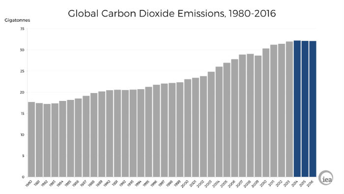
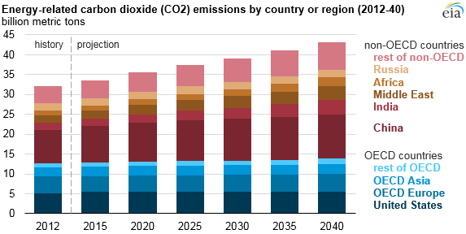
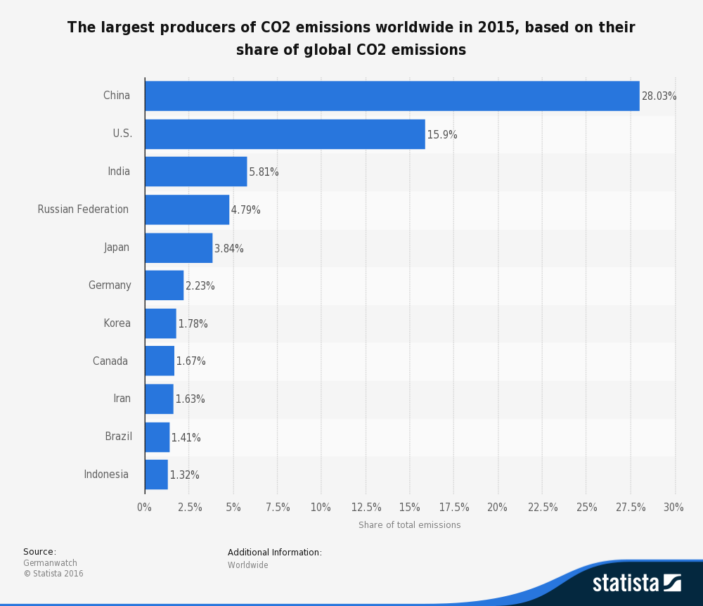

.png)
In this page, you will find ways to protect Earth and preserve the environment. Try to leave the Earth a better place than you arrived. Too much emission of carbon dioxide is one of the environmental issues we are facing today.We all can make some changes in our daily lives to live in a greener,more sustainable way.Let's spread the world to go green.
Carbon dioxide is a greenhouse gas.Greenhouse gases play an important role in helping the earth trap and retain heat for life as we know it, however, an increase in the amount of carbon dioxide in our atmosphere could lead to overall warming of our climate. And harmful carbon dioxide(CO2) greenhouse gas emissions damage the environment.
We are living in the best of times and in the worst times.
Since the Industrial Revolution, human sources of carbon dioxide emissions have been growing.Human activities such as the
burning of oil, coal and gas, as well as deforestation are the primary cause of the increased carbon dioxide concentration in
atmosphere.The largest source of carbon dioxide emission is from combustion of fossil fuels. This produce 87% of human carbon
dioxide emmissions.The remainder results from the clearing of forest and other land use changes(9%) as well as some industrial
process such as cement manufacturing(4%).Of all the different types of fossil fuels,coal produces the most carbon dioxide.Due
to human activities, the atmospheric concentration of carbon dioxide has been rising extensively since the Industrial
Revolution and has now reached dangerous levels not seen in the last 3 million years.The important source of carbon dioxide is plant and animal respiration,which accounts for 28.56% of natural emissions. Most of the CO2 released from the burning of fossil fuels and other human activities (e.g., cement manufacturing) is stored either in the atmosphere or in the oceans. The CO2 that remains in the atmosphere acts as a greenhouse gas, absorbing long-wavelength radiation (heat) in the atmosphere. CO2 taken up by the oceans does not affect the Earth's heat balance, so an understanding of the air-sea exchange of CO2 is an essential part of understanding the Earth's climate system and the potential impact of future CO2emissions.Cement production produces the most amount of carbon dioxide amongst all industrial process.Steel production is another industrial process that is an important source of carbon dioxide.The largest natural source of carbon dioxide emissions is from ocean atmosphere exchange.This produces 42.84% of natural carbon dioxide emissions.
|  |
|
|  |
|
|  |
|
{kind=link}